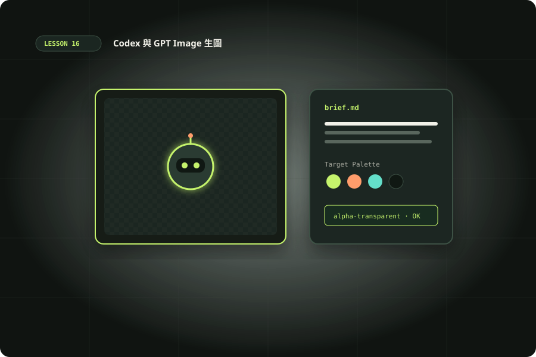

用 Codex 製作 GPT Image 視覺素材
區分內建生圖與 API 呼叫，從需求、草稿、編輯到透明素材與成本驗收。

準備與學習成果
開始前準備
- 完成基礎 Codex 任務交辦與本機工具單元
- 能在練習資料夾執行命令，理解輸入檔與輸出檔
完成後你能
- 能分辨內建生圖、skill 與 API 的權限和費用
- 完成可乾跑、金鑰不入檔的生成程式
- 交付需求、請求、素材來源與驗收紀錄
- 能檢查透明背景與卡片尺寸效果
兩小時實作安排
時間包含閱讀、操作、修正與驗收；不是純閱讀時間，也不是工具執行時間保證。
先選路徑：內建工具、skill 或 Images API
本單元要交付一張能放進網站與動畫的角色素材，並留下可重現的製作紀錄。Codex 負責拆解需求、準備程式、安排檔案與檢查產物；圖像由實際可用的生圖工具或 GPT Image API 產生。不要把「請畫圖」等同於每個 Codex 安裝都有相同工具。
產品內建生圖
若當前介面提供 image generation，直接用自然語言要求生成或編輯並保存產物。先確認工具是否存在、產物能否下載，使用量以該介面顯示為準。
本機 imagegen skill
Skill 是工作流程指示，可能包裝 CLI 與 API，也可能使用宿主提供的工具。先讀 SKILL.md 的依賴、金鑰及輸出路徑，不要假設安裝 skill 就獲得免費額度。
自己寫 Images API
適合批次、版本紀錄與網站素材管線；Python 範例預設只寫請求 JSON，必須加入 --execute 才會付費呼叫。
內建功能參考 官方生圖文件。產品工具與 API 是兩條不同的操作路徑。
官方產品文件在查核日列出：內建生圖使用 gpt-image-2，計入一般 Codex 使用限制；生圖依品質與尺寸，平均可能比類似純文字回合更快消耗額度。這與本課自建 API 選用的 2.5 模型不同，不能從模型新舊推論 Plus 介面可指定同一模型。
CLI 互動可明確加入 $imagegen；需要參考圖時以 -i 或 --image 附加。本機仍須有對應能力；以目前工具清單與 skill 說明為準。
codex -i input.png進入互動後輸入：$imagegen 請編輯附圖，保留機器人的輪廓與色盤，將手上的書換成提燈，輸出透明 PNG。無參考圖的新圖可直接使用相同 skill 名稱並描述需求。
模型、權限與預算界線
2026-10-10 查核官方文件，目前新整合列出 gpt-image-2.5-sunburst 與 gpt-image-2.5-flare。範例選 sunburst；這是可更新的設定，不是保證永久可用的模型名稱。執行前重新開 Image generation 核對帳號存取與模型。
Images API 使用 OPENAI_API_KEY 與 API 專案計費；ChatGPT Plus 訂閱不會直接替此程式支付 API 費用。帳號可能需要組織驗證；無權限時應查開發者控制台，不要持續重試。先估一張低品質草稿的支出，再決定是否生成高品質版本。
python3 -m venv .venv
source .venv/bin/activate
python -m pip install openai
python generate_image.py
# 僅在已設定金鑰且同意 API 支出時執行：
python generate_image.py --executeWindows 可使用虛擬環境的 Scripts 啟動方式。金鑰由本機環境或祕密管理工具注入；不要貼到 Codex 對話、前端 JavaScript 或 Git。教材未執行任何付費生圖。
把抽象風格變成可驗收規格
先寫 brief.md：用途是 320px 卡片、青綠角色、正面全身、一本書、無文字、透明底、四周保留安全距離。列出必須保留的輪廓與可變的服裝細節。用「高級、好看、科技感」很難比較結果；改成兩到三個具體特徵，讓人類能勾選。
生圖需求可以有背景、主體、構圖、色盤與限制，詳細策略見 Image prompting。課程練習採用「一個主體、單一動作」控制變因；先評估辨識度，再處理細節。繁體中文標題建議由 HTML 或 Remotion 排版，保留文字搜尋與修改能力。
草稿驗收記錄分成構圖、身份一致性、邊界與透明度四欄。每次只改一類要求，使用 robot-v01.png、robot-v02.png 保存比較；不要覆寫唯一原檔。若要人物或品牌參考，確認有權使用，並移除無關私人資訊。
可直接跟做：乾跑與生成保存
下載 generate_image.py，在獨立練習資料夾執行。乾跑不需要 SDK 或金鑰，會建立 output/request.json；比較請求內容與你的 brief。下列是完整程式，使用 base64 解碼後保存 PNG，不把整串圖片資料印到日誌。
import argparse, base64, json, os
from pathlib import Path
p = argparse.ArgumentParser()
p.add_argument('--execute', action='store_true')
a = p.parse_args()
request = dict(model='gpt-image-2.5-sunburst',
prompt='A single friendly teal robot reading a book, isolated, no text, transparent background',
size='1024x1024', quality='low', background='transparent', output_format='png', n=1)
out = Path('output'); out.mkdir(exist_ok=True)
(out / 'request.json').write_text(json.dumps(request, indent=2), encoding='utf-8')
if not a.execute:
print('DRY RUN: output/request.json; no API call')
else:
if not os.environ.get('OPENAI_API_KEY'):
raise SystemExit('Missing OPENAI_API_KEY')
from openai import OpenAI
result = OpenAI().images.generate(**request)
if not result.data or not result.data[0].b64_json:
raise RuntimeError('No image returned')
(out / 'robot.png').write_bytes(base64.b64decode(result.data[0].b64_json, validate=True))
(out / 'usage.json').write_text(json.dumps(result.usage.model_dump() if result.usage else {}, indent=2))
print('Saved output/robot.png')執行模式另存 usage.json，與請求參數一起記錄。API 參數與回傳格式可查 Create image reference。請求完成並不代表素材合格；先開檔確認不是空白，再檢查尺寸與邊緣。
編輯既有圖片、透明底與尺寸
生成新圖片用 images.generate；以現有圖作參考或修改用 images.edit。以下另存變體；input.png 是你有權使用的檔案。不要把既有圖只當文字描述，應提供實際圖片輸入。參數見 Create image edit。
from openai import OpenAI
import base64
from pathlib import Path
with open('input.png', 'rb') as image:
result = OpenAI().images.edit(
model='gpt-image-2.5-sunburst', image=image,
prompt='Keep the same robot silhouette and colors; replace the book with a small lantern.',
size='1024x1024', quality='low',
background='transparent', output_format='png')
Path('edited.png').write_bytes(base64.b64decode(result.data[0].b64_json))透明輸出指定 background=transparent 搭配 PNG 或 WebP；JPEG 不適合透明素材。範例固定 1024×1024、low；進階尺寸要符合當前模型限制，不能任意填 320×320。把產物放在白色和深色背景查看，棋盤格若被畫進圖片，並不是真正 alpha 透明。
局部 mask 是另一種編輯輸入，需符合格式、尺寸及 alpha 要求；透明區域指向要編輯的位置。練習先用完整參考圖，不把 mask 當成像素完全鎖定的承諾。保留原圖，逐次審核修改是否影響其他部位。
120 分鐘任務：做成可交付的素材包
- 15 分鐘：列出目前可用工具與選定路徑，建立 brief.md，明確區分 Plus 工具使用與自建 API 支出。
- 20 分鐘：下載程式，乾跑並人工核對 request.json；故意移除 --execute，確認無金鑰仍可完成。
- 45 分鐘：在不付費模式完成資料夾、命名與檢查腳本；有預算者另外生成一張草稿，無 API 者以本機已有圖片替代驗收練習並註記來源。
- 25 分鐘：規劃一張編輯變體，逐項記錄保留與改變。用白底、黑底、卡片尺寸檢查；如不呼叫 API，就交付 edit-request.md。
- 15 分鐘：整理 brief、request、來源、成本紀錄、通過／未通過項目與下一步。
提交前讓 Codex 查看圖片而不只檢查檔名；若無影像檢視工具，把人工檢查標示為待完成，不宣稱畫面已通過。
常見反例與失敗分類
反例一：「Plus 用戶，請直接跑 100 張最高品質」沒有預算與停止條件。改善方式是單張草稿、人工挑選、有限重試。反例二：把模型名填到 Codex 文字模型設定，不能因此取得 image API。反例三：把 PNG 副檔名改成 JPG 就以為完成轉檔，檔案內容仍可能不匹配。
401 先處理金鑰來源；403 檢查模型與專案權限；400 先看尺寸、背景格式、輸入圖片及提示錯誤；429 分辨速率限制與額度不足。日誌保留錯誤類型與 request ID，遮蔽金鑰。不要遇到任何錯誤都無限重試，也不要把無法存取服務誤判為 Prompt 不好。
真正完成標準是素材可開啟、檔名與 manifest 一致、用途驗收通過、費用有紀錄。對於生成中的標誌、文字與重複角色，仍需人工審核；模型輸出不能取代產品設計的決策。
情境判斷
驗收與完成
官方與第一手來源
範例與操作安排由本站整理。查證日期：2026-10-10；版本、帳號與本機環境不同時，請核對原始文件。